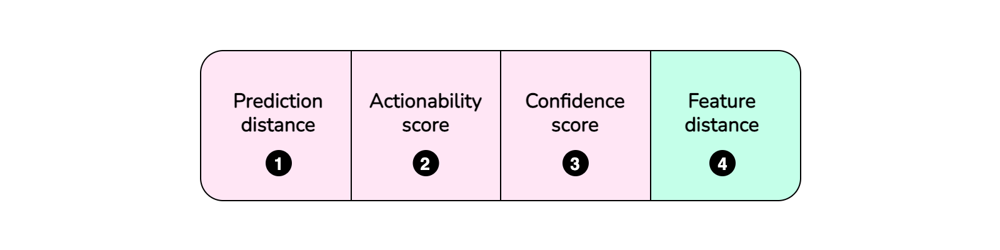
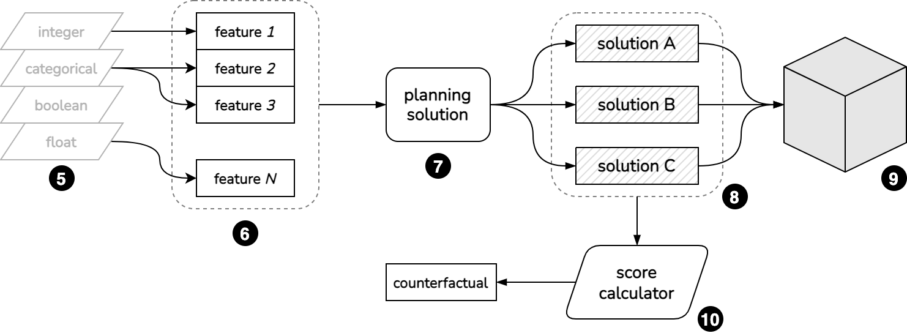
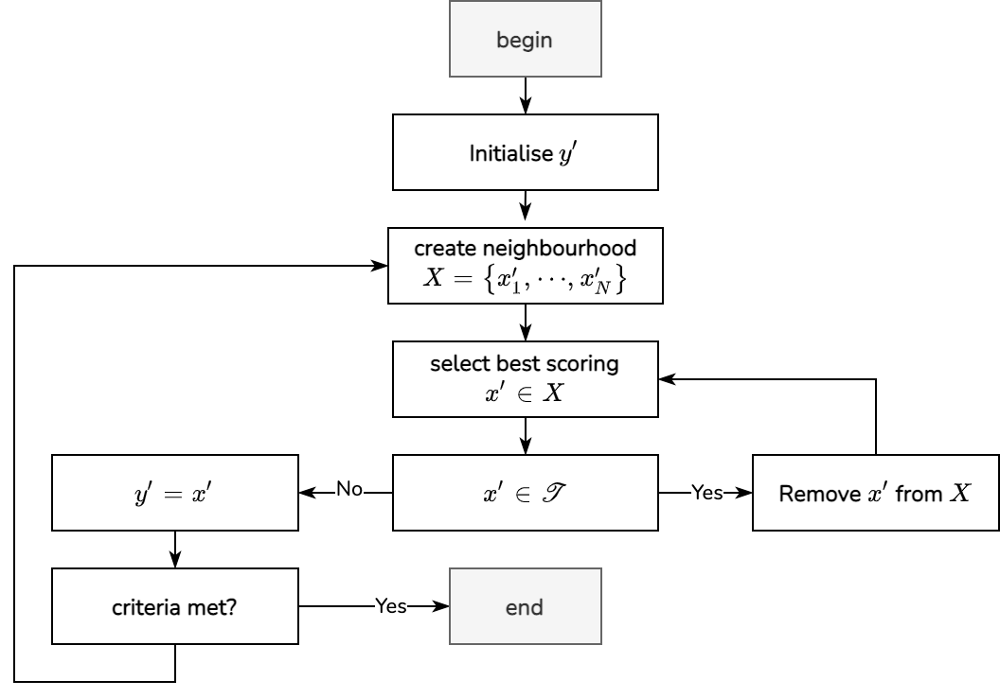

Counterfactuals with constraint solvers
Scoring
An implementation on how to calculate counterfactuals with Constraint Solvers (namely OptaPlanner) is available here.
This implementation satisfies several criteria of the counterfactuals desiderata.
The penalisation score is represented with a BendableBigDecimalScore1, having three "hard" levels and one "soft" level.

The first hard level component, 1, penalises the score according to the distance between the prediction, \(y^{\prime}\) for the currently proposed solution, \(x^{\prime}\) and the original prediction \(y\), that is this our \((\hat{f}(x^{\prime})-y^{\prime})^2\).
The actionability is score with 2. This component penalises the score according to number of immutable features which were changed in the counterfactual.
A confidence score component, 3 is use to, optionally, impose a minimum confidence threshold to the counterfactual's associated prediction, \(x^{\prime}\).
Finally, the feature distance, 4, penalises the score according to the feature distance. This is the representation of
\[ d(x, x^{\prime}). \]In the concrete implementation linked above, the distance, \(d\), chosen is a Manhattan (or \(L^1\)) distance calculated feature-wise.
Implementation

Entities are defined by classes such as Integer, Categorical, Boolean or Float, as shown in 5.
Each of the features, shown in 6, is created as an instance of one of these entities. For instance, feature1 would be of type Integer and feature2 would be of type Categorical, etc.
The original data point, \(x\) is represented by this set of features (6).
A planning solution (PlanningSolution), illustrated in 7 will produce candidate solutions (shown in 8)
For each solution, we propose a new set of features (\(x^{\prime}\)) as a counterfactual candidate. For instance, solution A in 8.
In the following section we will look at how each component is calculated. We will refer to each "hard" level component as \(H_1, H_2\) and \(H_3\) and the "soft" component as \(S_1\). The overal score consists, then, of \(S=\{H_1, H_2, H_3, S_1 \}\)
Prediction distance
The first component of the score, 1 is established by sending the proposed counterfactual \(x^{\prime}\), 8 to a predictive model, 9 and calculating the distance between the desired outcome, \(y^{\prime}\) and the model's prediction. This is done component wise, for each feature of the output. That is, for a prediction with \(N\) features, we calculate
\[ H_1=\left(\sum_i^Nf(x^{\prime}_i) - y^{\prime}_i\right)^2 \]Actionability score
For the second component, the actionability score, 2. We calculate the number of features for the protected set \(\mathcal{A}\), which have a different value from the original. That is, assuming we have a certain number of protectd features \(M\), such that \(\mathcal{A}=\{A_1,A_2,\dots,A_M\}\), we calculate:
\[ H_2 = \sum_{a \in \mathcal{A}} \mathbb{1}(x_a \neq x^{\prime}_a), \]Confidence score
For each feature \(i\), if we have a prediction confidence, \(p_i(f(x^{\prime}))\), we calculate the number of features which have a confidence below a certain predefined threshold, \(P_i\). If the threshold is not defined, this component will always be zero and not influence the counterfactual selection. Assuming we have defined a threshold for all \(N\) features, \(P = \{P_1, P_2, \dots, P_N\}\) we calculate this score as
\[ H_3 = \sum_i^N \mathbb{1} \left( p_i \left( f(x^{\prime}) < P_i \right) \right) \]Feature distance
Considering that each datapoint \(x\) consists of different \(N\) features, such that \(x=\left(f_1,\dots,f_n\right)\) and that each feature might be numerical or categorical2, we calculate the distance between a datapoint \(x\) and a potential counterfactual \(x^{\prime}\):
\[ d\left(x,x^{\prime}\right)=\sum_{i=1}^Nd^{\prime}\left(x_i,x_i^{\prime}\right) \] \[ d^{\prime}\left(x_i,x_i^{\prime}\right)= \begin{cases} \left(x_i-x_i^{\prime}\right)^2,\quad\text{if}\ x_i,x_i^{\prime}\in\mathbb{N} \lor x_i,x_i^{\prime}\in\mathbb{R}\\ 1-\delta_{x,x^{\prime}},\quad\text{if}\ x_i,x_i^{\prime}\ \text{categorical} \end{cases} \]Since in many scenarios we might not have access to the training data, the above distance are not normalised. In the event that we do have access to training data, then we can use the standard deviation (\(SD\)) to normalise the features. The \(SD\) can be calculated as:
\[ SD=\sqrt{\frac{1}{N}\sum_{i=1}^N\left(x_i-\bar{x}\right)^2} \]so that, in this case, we scale the numerical features with
\[ \bar{d}^{\prime}\left(x_i,x_i^{\prime}\right)= \frac{\left(x_i-x_i^{\prime}\right)^2}{SD}. \]Searching
To search for a counterfactual, we start by specifying a search domain for each feature. This will include:
- An upper and lower bounds for numerical features, respectively \(\mathcal{D}_l, \mathcal{D}_u\)
- A set of categories for categorical features, \(\mathcal{C}\)
- \(\mathcal{B}=\{0,1\}\) for the specific case of boolean/binary values
Typically these values would be either established by someone with domain knowledge, or by values that might reflect our expectation for the actual counterfactual (for instance, an age would have realistic values).
The algorithm used for the search is Tabu search3 (Glover, 1989).

-
c.f. https://docs.optaplanner.org/8.0.0.Final/optaplanner-javadoc/org/optaplanner/core/api/score/buildin/bendablebigdecimal/BendableBigDecimalScore.html ↩
-
Here we are considering binary and boolean values as categorical. ↩
-
Glover, Fred. "Tabu search—part I." ORSA Journal on computing 1, no. 3 (1989): 190-206. ↩